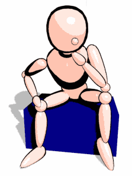

RULA - Rapid Upper Limb Assessment
An assessment tool for assesing the risk of upper limb disorders
Choose one of the assessments, selecting the postures that most accurately reflect your working position

Choose one of the assessments, selecting the postures that most accurately reflect your working position
